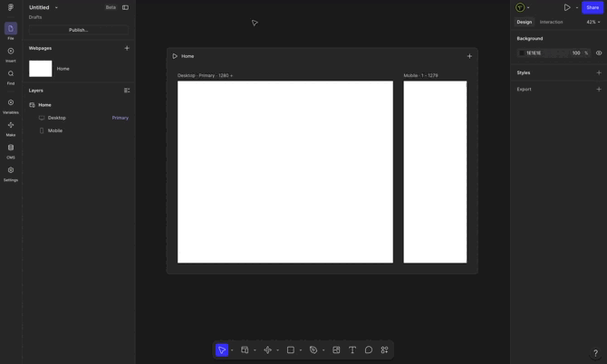
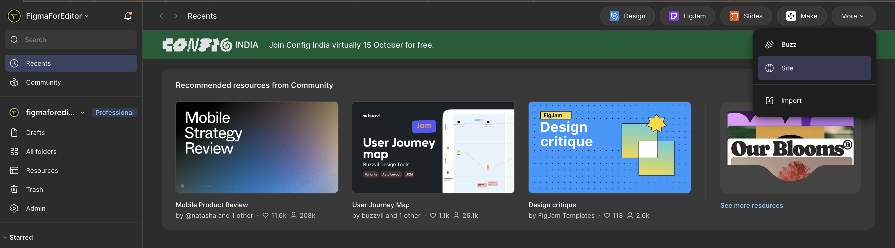
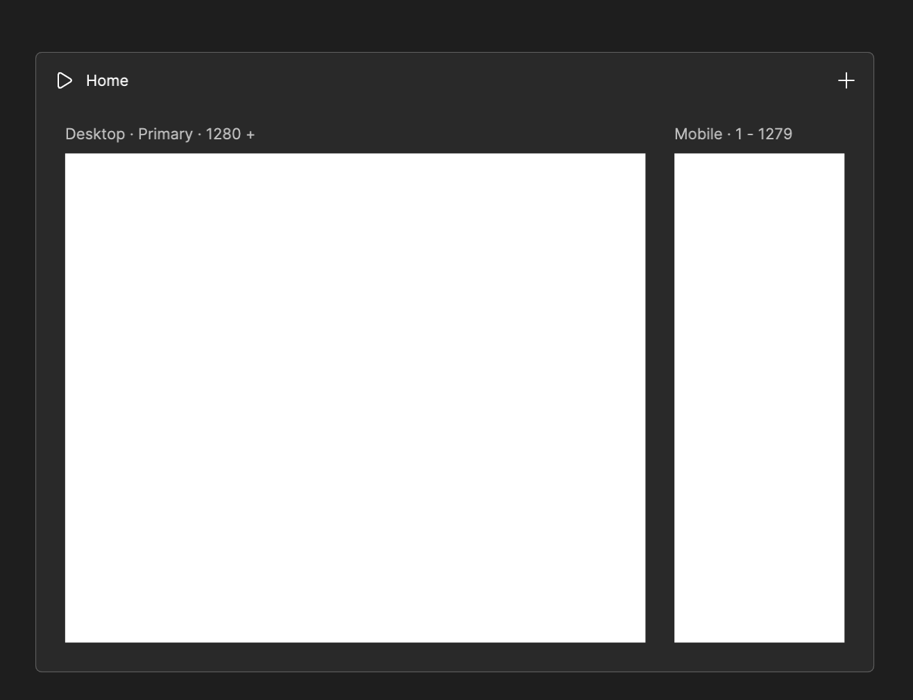

Это прямое продолжение прошлого урока: Figma Make генерирует отдельный экран, Figma Sites — работающий сайт целиком, с адресом и адаптивностью.

Генерация структуры и контента по промпту
AI-часть Figma Sites работает похожим образом на Figma Make, но результат — не отдельный экран, а сразу многостраничная структура сайта: главная, о нас, контакты, и так далее, в зависимости от промпта. Но сначала, выйдем на главную и найдем там Sites:

Если вы не генерируете сайт с нуля, а публикуете уже собранный макет в живой сайт автоматически переносится:
Автолейаут — становится реальным flex-поведением блоков в браузере.
Constraints и адаптивные настройки — превращаются в реальное поведение сайта при изменении ширины окна.
Стили текста и цвета — переносятся как есть, без искажений, если были собраны через стили, а не «на глаз».
Чем аккуратнее был собран исходный макет по правилам курса, тем меньше сюрпризов при публикации. Чтобы перенести сайт достаточно, просто положите в секцию с экранами, ваш макет страницы и можете редактировать:

Что редактор может сделать сам, без разработчика
Ключевая ценность Sites для редактора — это не разовая публикация, а возможность самостоятельно вносить изменения после публикации:
Правки текста — заголовки, описания, подписи — прямо в интерфейсе Sites, без пересборки макета и без обращения к разработчику.
Структура страниц — добавление/удаление секций через тот же AI-промпт или вручную.
Публикация обновлений — одним действием, без деплоя в привычном смысле разработки.
Это прямое расширение роли редактора: раньше правка текста на сайте почти всегда требовала похода к разработчику (даже за одно слово), теперь для простых сайтов эта зависимость снимается полностью.
Ограничения: динамика, формы, интеграции
Честные ограничения, чтобы не переоценить возможности инструмента:
Сложная бизнес-логика не поддерживается. Личный кабинет, оплата, база данных пользователей — это по-прежнему задача полноценной разработки, Sites для таких продуктов не замена.
Формы обратной связи обычно работают на встроенной, ограниченной логике — для полноценной CRM-интеграции или сложной валидации потребуется дополнительная настройка или разработка.
SEO и аналитика зачастую ограничены базовым набором настроек по сравнению с профессиональными сайтостроителями — стоит уточнять на момент работы, что доступно.
Для лендингов, визиток, промо-страниц, портфолио — тех задач, где нет сложной логики — Sites закрывает вопрос полностью и быстро.
Публикация, домен и обновления после публикации
После публикации сайт получает адрес на поддомене Figma (бесплатно) или можно подключить собственный домен (обычно платная функция. Любое обновление контента или структуры публикуется отдельным действием — сайт не обновляется автоматически при изменении макета, это осознанный шаг, что удобно: можно вносить правки, не боясь случайно «сломать» уже опубликованную версию, пока сами не решите опубликовать заново.